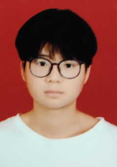
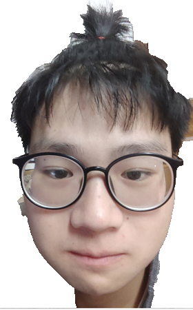
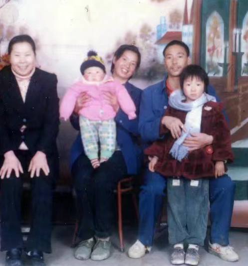
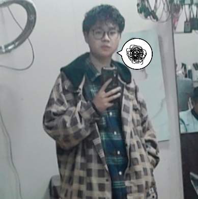
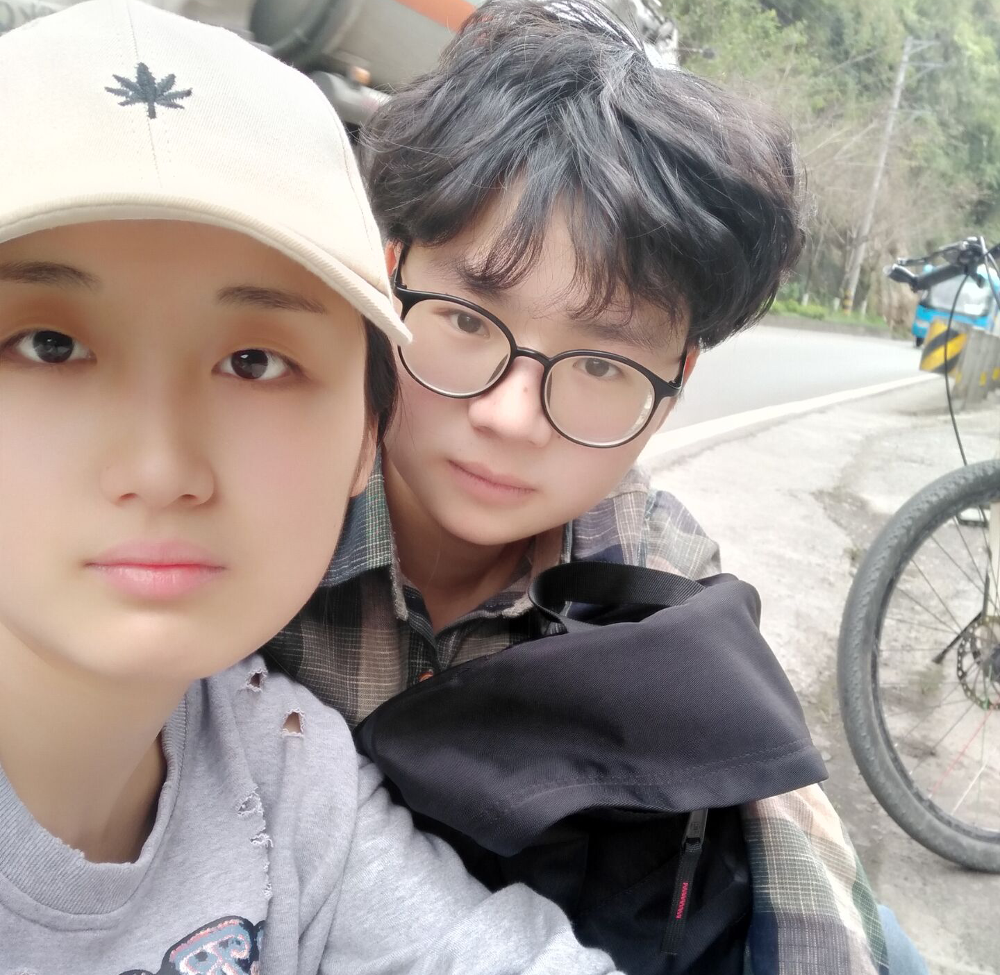
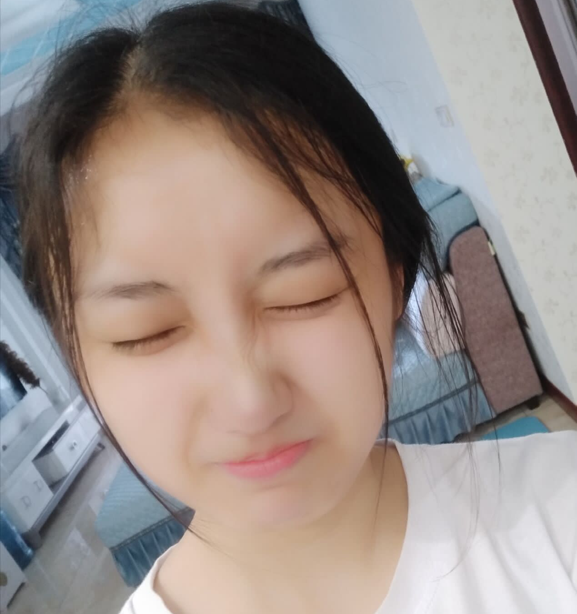
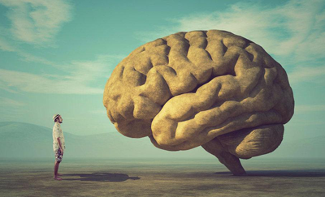
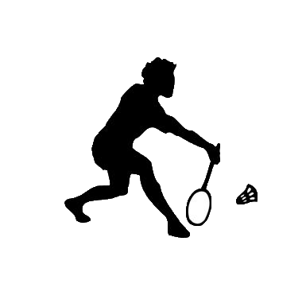
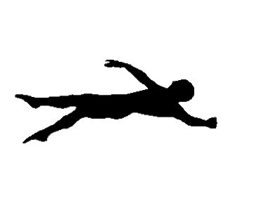
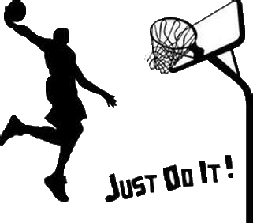

照
片
墙
→

片
墙
→
姓名：张人中
姓别：男
就读大学：重庆师范大学
专业：计算机科学与技术
电话：17782240199
Email:1450304792@qq.com
籍贯：重庆彭水
剖析自我
未来规划






羽毛球
羽毛球是一项室内、室外都可以进行的体育运动无论是进行有规则的羽毛球比赛还是作为一般性的健身活动，都要在场地上不停地进行脚步移动、跳跃转体挥拍，合理地运用各种击球技术和步法将球在场上往返对击，从而增大了上肢、下肢和腰部肌肉的力量，加快了锻炼者全身血液循环，增强了心血管系统和呼吸系统的功能。羽毛球运动可释放压力，促进身心健康。

游泳
游泳是人在水的浮力作用下产生向上漂浮，凭借浮力通过肢体有规律的运动，使身体在水中有规律运动的技能。常见游泳姿势一般分为爬泳、蛙泳、蝶泳和仰泳。爬泳速度最快，蛙泳姿势比较优美，蝶泳爆发力最强，仰泳最省体力。游泳对心血管系统的改善有重要的作用。冷水的刺激通过调节作用与新陈代谢能促进血液循环,游泳运动是改善和提高肺活量的有效手段之一。

篮球
篮球是以手为中心的身体对抗性体育运动。它的运动特点有:对抗性、集体性、观赏性。趣味性、健身性。打篮球可训练脑部的思考和判断能力，及随思考后身体继发的反射动作速度；可训练眼睛视力及耳朵听力的敏感度；可训练全身的肌肉活动及肌肉力量，同时也能训练耐力，改善体形；可训练关节的协调及敏捷度。也是治心血管病的良方。